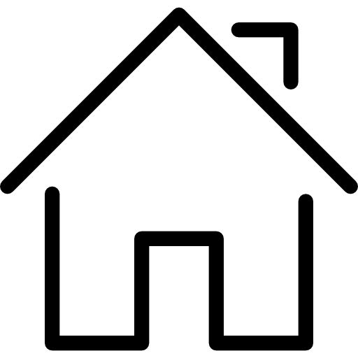
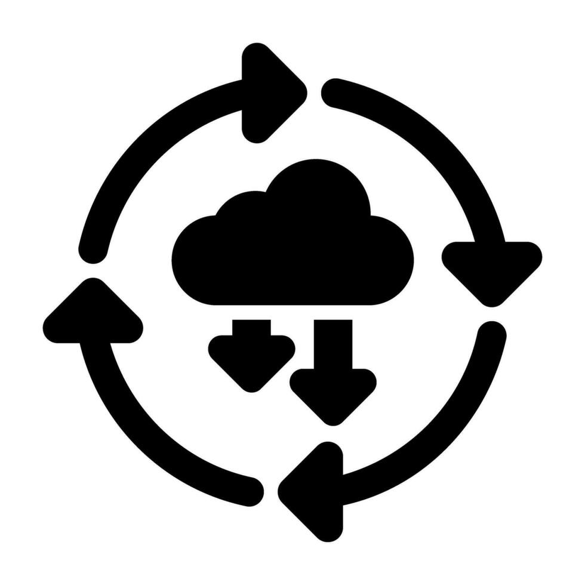

Todas
Reunións
Páxinas web
Aplicacións móbiles

Despregue
Xestión de Tareas
Agregar tarea
Listar todas
Alta
Media
Baixa
6
Tareas próximas a expirar:
×
Nome da Tarea
Descripción
Prioridade
Alta
Media
Baixa
Categoría
Reunións
Desarrollo Páxina Web
Desarrollo Aplicación Móbil
Despregamento
Imaxe da Tarea
Fecha de Inicio
Fecha de Fin
Gardar